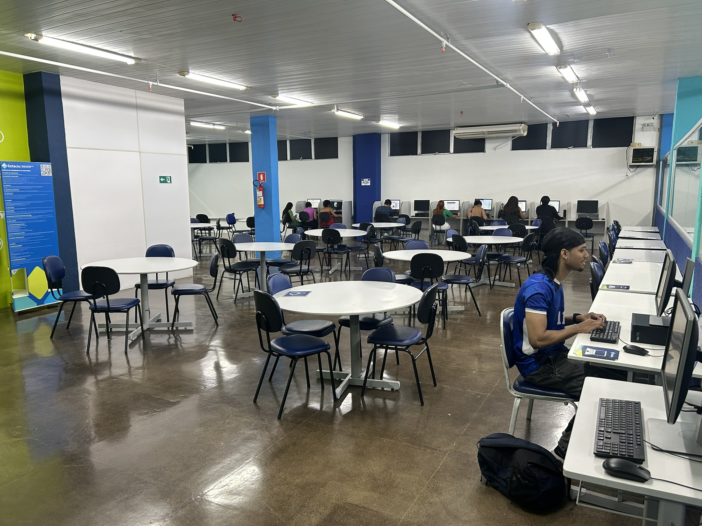
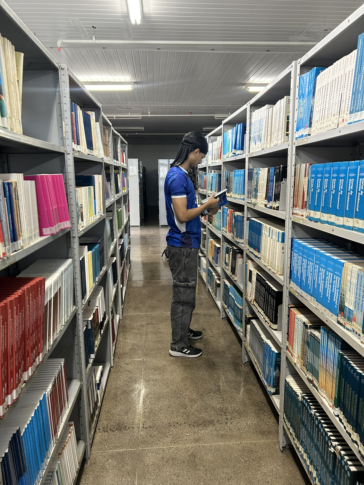

Sobre a Biblioteca
A Biblioteca Estácio São Luís é um espaço dedicado ao conhecimento, pesquisa e desenvolvimento acadêmico. Oferece um ambiente moderno e acessível para estudantes, com acervo atualizado, áreas de estudo e suporte ao aprendizado.
Nosso objetivo é proporcionar recursos que auxiliem na formação acadêmica, incentivando a leitura, a pesquisa e o crescimento intelectual de toda a comunidade universitária.



Acervo Completo
Acesso a livros físicos e digitais atualizados para apoiar sua formação acadêmica em todas as áreas.
Área de Estudo
Espaço moderno, silencioso e climatizado, ideal para leitura, pesquisa e concentração.
Wi-Fi Gratuito
Conexão rápida e estável para todos os alunos realizarem pesquisas e estudos online.
Suporte a TCC
Orientação em normas ABNT, repositório de trabalhos e suporte para referências bibliográficas.
Acessibilidade
Recursos VLibras, NVDA e DOSVOX garantem acesso pleno ao conhecimento para todos.
Empréstimo
Empréstimo domiciliar para alunos e docentes, com renovação disponível pelo sistema.